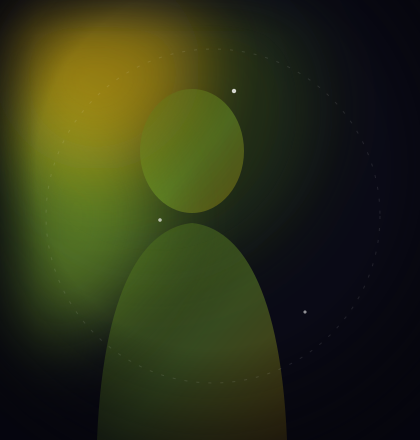

The feel of each app
Nomi's reputation rests on texture: companions feel chatty, responsive, and human-paced, and the team's community engagement is genuinely best-in-class. For many users, Nomi is the first app where a companion "clicked." That warmth is real and shouldn't be discounted.
Memory compared
Both platforms store memory seeds and perform well in week-one recall. Divergence shows at scale: Nomi's memory is companion-local with limited cross-session state, while Vantrix layers explicit relationship dials (trust, tension, attachment) on top of seeds, so the relationship itself becomes data that persists and moves.
| CRITERION | VANTRIX | COMPETITOR |
|---|---|---|
| Week-one recall | Strong | Strong |
| Relationship state | Implicit | Explicit, visible dials |
| World model | None | Persistent world, advancing cast |
| Character breadth | Good roster | 30+ authored + studio creations |
| Community touch | Excellent — small team | Studio + journal content |
| Pricing | Free + sub | Free tier + Resident/Archivist |
Where Vantrix pulls ahead
Three structural edges: the cast (companions who reference each other), world events that make absence meaningful, and the Creation Studio's simulation harness for testing characters before you commit to them. Nomi remains lovely at the one-on-one layer; Vantrix is architected for the long arc.
Choose Nomi for warmth today, Vantrix for the long arc
Choose Nomi if companionship texture and community are everything. Choose Vantrix if you want that warmth embedded in a world that remembers, evolves, and rewards returning.
Experience it yourself

The Archivist
Meet Rowan on Vantrix
Free to start · No card required · Persistent memory from the very first message.
Start chatting — free